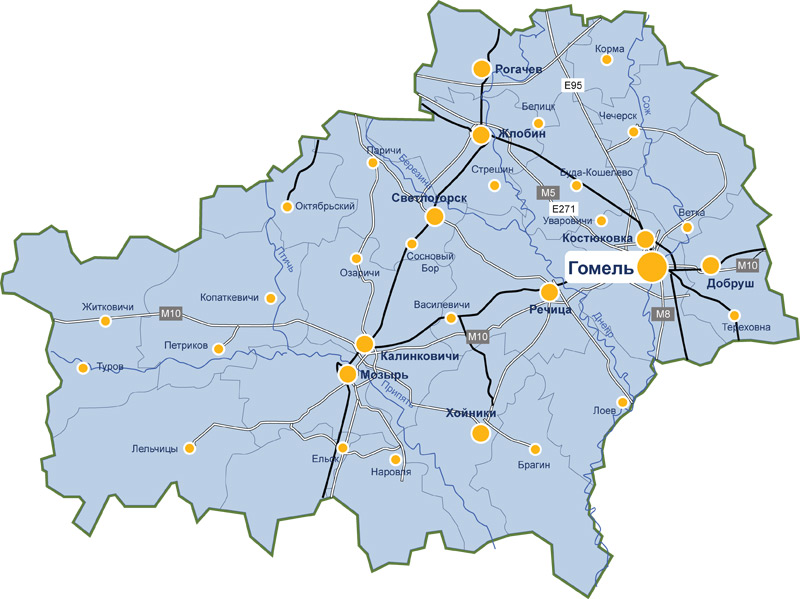

Город Жлобин
История города
Результаты археологических обследований показывают, что первые поселения людей на территории современного города возникли в первобытнообщинное время, задолго до основания Жлобина. На берегу Днепра в пределах города найдены остатки поселения периода бронзового века (II-е — начало I-го тысячелетия до н. э.). На территории городского парка культуры и отдыха «Приднепровский» обнаружены следы поселения периода железного века, существовавшего в конце I тысячелетия до н. э. — начале I тыс. н. э.
Достопримечательности
- Жлобинский зоопарк
- Аквапарк и Ледовый дворец
- Городской парк культуры и отдыха «Приднепровский»
- Дворец игровых видов спорта
- Стадион «Локомотив»
- Аллея Героев
- Флагшток с Государственным флагом Республики Беларусь
- Памятник-паровоз, Привокзальная площадь
Символы города
Официальные геральдические символы города Жлобина
- герб
- флаг

Расположение на карте
Жлобин — город в Гомельской области Беларуси, административный центр Жлобинского района.

Новости
Ознакомиться с актуальными новостями о городе Жлобин можно по ссылке
Новости Жлобин (новая вкладка)Город сейчас
Краткое описание экономики
По информации за первое полугодие 2026 года, экономика Жлобинского района включает различные виды деятельности: промышленность, сельское хозяйство, строительство, торговлю, транспорт и другие. Экономика Жлобинского района экспортоориентированная: поддерживаются внешнеэкономические связи с 24 государствами мира, из которых в 18 стран осуществляется экспорт.
Услуги
- Железнодорожные пассажирские и грузовые перевозки
- ородское такси и аренда авто
- Профессиональный клининг и уборка помещений
- Услуги аквапарка и водных аттракционов
- Массовое катание на коньках и аренда ледовой арены
Предприятия города
- Белорусский металлургический завод (БМЗ)
- Жлобинский мясокомбинат (АФПК)
- Жлобинский молочный завод (филиал Рогачёвского молочноконсервного комбината)
- Жлобинская швейная фабрика
Как выглядит город Жлобин